Kachel: bestanden, Kern 1 Es wird nur gezeigt, dass Menschen Jesus ansehen bzw. zuhören; die Zeichen, ihr Glauben daran und Jesu Zurückhaltung, sich ihnen anzuvertrauen, werden nicht klar dargestellt.
abgelegtes Bild: bestanden, 6 Punkte, Kern 1 Maria bei der Hochzeit zu Kana und der fehlende Wein werden erkannt, aber Jesu Antwort („Meine Stunde ist noch nicht gekommen“) wird nicht dargestellt/erwähnt.
Blind: The woman is speaking or explaining something to the bearded man while gesturing with an open hand. The man looks back at her and listens across a table with cups and a pitcher. In the background, a small group of indistinct people appears to be gathered at the same meal or feast. – This likely illustrates the Wedding at Cana, at the moment Mary tells Jesus that the wine has run out, before the miracle involving the water jars.
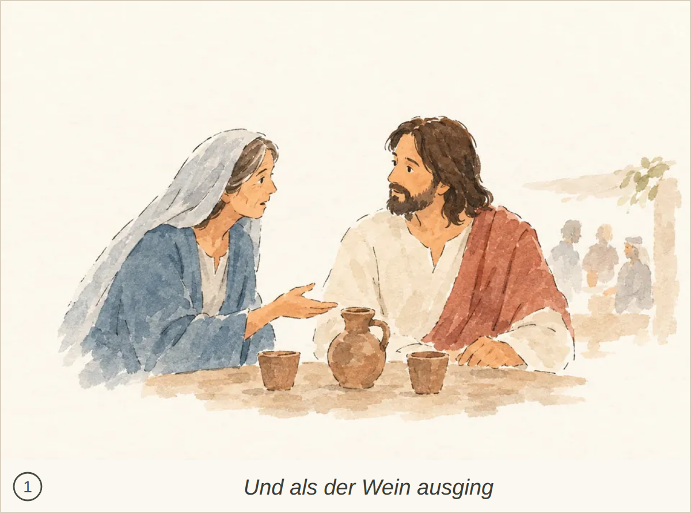
Kachel: durchgefallen, Kern 1 Jesu Antwort („Meine Stunde ist noch nicht gekommen“) wird nicht dargestellt oder erwähnt; er wirkt nur zuhörend.
abgelegtes Bild: bestanden, 8 Punkte, Kern 2 Nichts Wesentliches; die Verwandlung zu Wein und der genaue Ausspruch werden nur angedeutet, nicht ausdrücklich genannt.
Blind: An older man in the center holds a cup and gestures toward the flower-crowned young man, as if speaking, blessing, or making a toast. The surrounding people stand in a line and watch calmly, with the mood appearing ceremonial and pleasant. – This may illustrate the Wedding at Cana, likely the moment when wine or a cup is being presented or discussed while Jesus and wedding guests stand nearby.
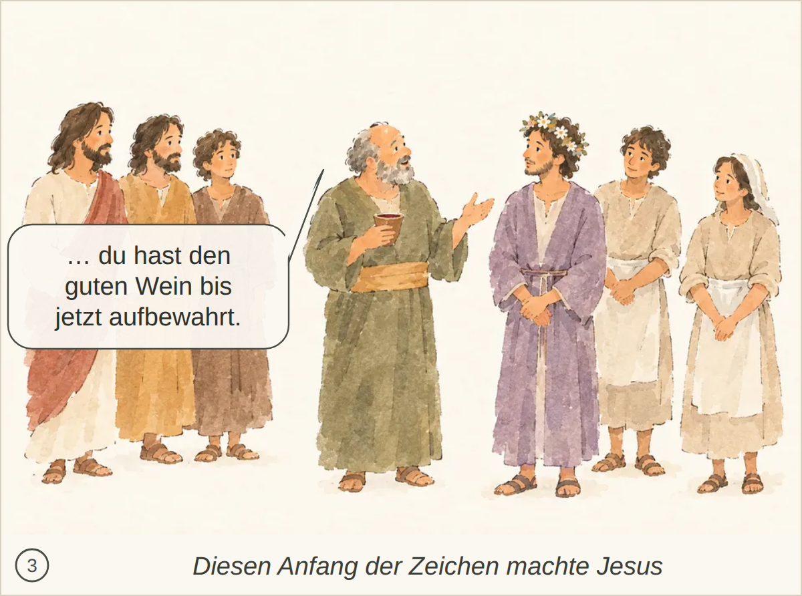
Kachel: bestanden, Kern 2 Nichts Wesentliches fehlt.
abgelegtes Bild: bestanden, 7 Punkte, Kern 2 Der Ausspruch Jesu («Macht das Haus meines Vaters nicht zu einem Haus des Handels!») wird nicht ausdrücklich erwähnt.
Blind: A bearded man in white and red is driving sellers and animals out, raising a whip and overturning a table with coins spilling onto the ground. The two men with bird cages recoil in surprise while livestock moves away to the right. – This likely illustrates the Bible story of Jesus cleansing the Temple, specifically the moment when he drives out the animal sellers and money changers, overturning a table and scattering coins.
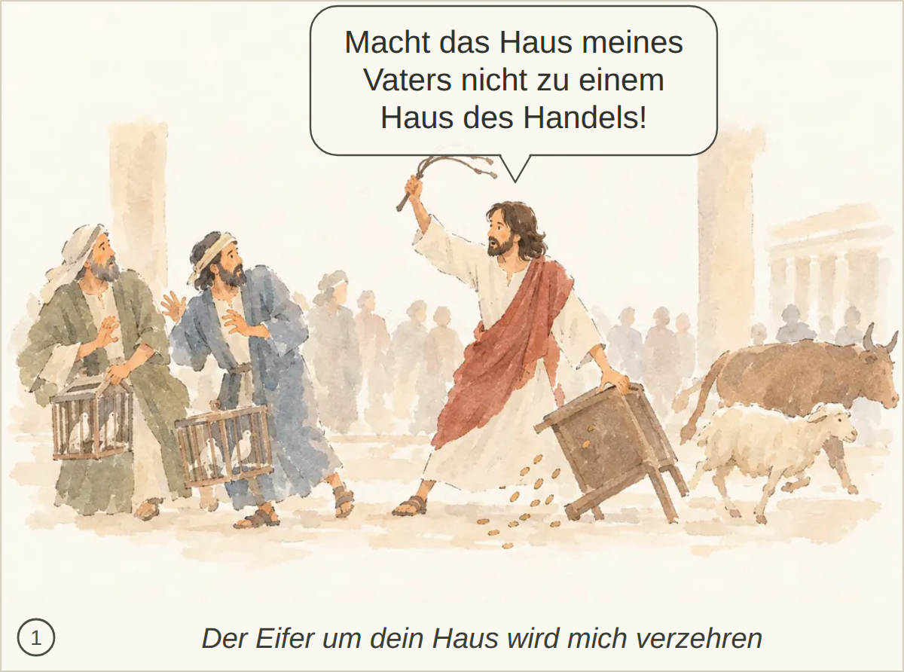
Kachel: bestanden, Kern 2 Nichts Wesentliches fehlt; die Szene und Jesu Aussage werden klar erkannt.
abgelegtes Bild: bestanden, 6 Punkte, Kern 1 Die Szene wird nur allgemein als Gespräch/Frage an Jesus erkannt; es fehlt das konkrete Zeichen-Verlangen und Jesu Aussage über den niedergerissenen Tempel als Hinweis auf seinen Leib und die Auferstehung.
Blind: Three robed men on the left appear to be speaking with or questioning the bearded man on the right. The man on the right faces them calmly with one hand on his chest, as if answering or explaining something. – Likely an illustration of Jesus speaking with religious leaders or elders at the temple; the exact Bible episode is not identifiable from the image alone.
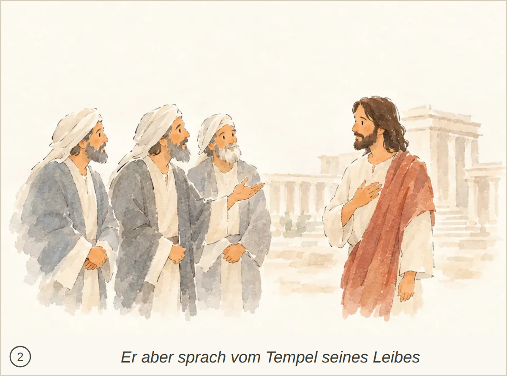
Kachel: durchgefallen, Kern 2 Nichts Wesentliches; die spätere Erinnerung der Jünger nach der Auferweckung ist nicht dargestellt.
abgelegtes Bild: bestanden, 3 Punkte, Kern 1 Es fehlen die Zeichen als Grund ihres Glaubens sowie Jesu Zurückhaltung/Misstrauen, weil er die Menschen und ihr Inneres kennt.
Blind: A group of people is gathered around a bearded man in a white tunic and red draped cloth. The group is smiling and looking toward him, while he faces them calmly as if speaking or greeting them. – This appears to illustrate Jesus with followers or a family group, possibly a moment where people come to listen to him or bring children to him. The exact Bible scene is not certain from the visible image alone.
Kachel: bestanden, Kern 1 Es wird nur gezeigt, dass Menschen Jesus ansehen bzw. zuhören; die Zeichen, ihr Glauben daran und Jesu Zurückhaltung, sich ihnen anzuvertrauen, werden nicht klar dargestellt.
abgelegtes Bild: bestanden, 6 Punkte, Kern 2 Nur die Aufforderung, dem Speisemeister zu bringen, wird nicht erwähnt.
Blind: Several servants are filling large stone jars with water from smaller pitchers. An older woman watches from the left, while a bearded man in a white robe and red-brown cloak gestures toward the group as if giving instructions. – This appears to illustrate the Bible story of the wedding at Cana, at the moment when Jesus tells the servants to fill the six stone jars with water before turning the water into wine; the older woman at left may be Mary.
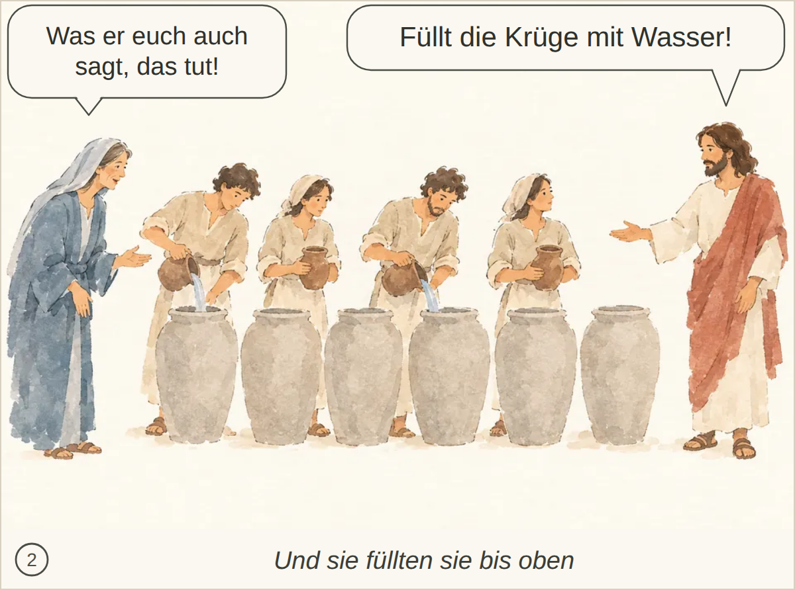
Kachel: bestanden, Kern 2 Nichts Wesentliches; der Auftrag, daraus zu schöpfen und es dem Speisemeister zu bringen, wird nicht ausdrücklich erwähnt.
abgelegtes Bild: bestanden, 5 Punkte, Kern 1 Es fehlen Passa/Jerusalem, die vielen, die wegen seiner Zeichen an Jesus glauben, und vor allem Jesu Zurückhaltung: Er vertraut sich ihnen nicht an, weil er das Innere des Menschen kennt.
Blind: A small group of people on the left is looking toward the solitary man on the right. One man in the group is pointing at him, while the others watch with curiosity or attention. – Possibly John 1: John the Baptist or another witness points out Jesus to others, at the moment of identifying him as someone important. This is uncertain from the image alone.

Kachel: bestanden, Kern 2 Nichts Wesentliches; Passa in Jerusalem und die gesehenen Zeichen sind nicht direkt sichtbar.
abgelegtes Bild: bestanden, 6 Punkte, Kern 2 Nichts Wesentliches; das Kissen im Heck und die genauen Worte der Jünger werden nicht erwähnt.
Blind: Several men are in a small boat on rough water during a storm. One man lies asleep at the right end while the others look frightened or urgent, and one reaches toward him as if trying to wake him. – This appears to illustrate the Bible story of Jesus calming the storm, at the moment when the disciples are afraid in the boat and are about to wake Jesus, who is sleeping.
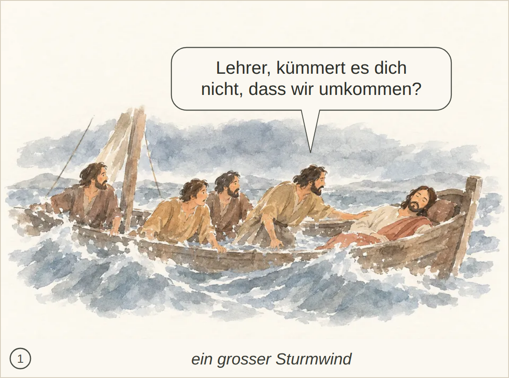
Kachel: bestanden, Kern 2 Nichts Wesentliches fehlt.
abgelegtes Bild: bestanden, 6 Punkte, Kern 1 Die Szene wird als Sturmstillung erkannt, aber das Verstummen des Windes und die grosse Stille des Sees fehlen bzw. das Wasser wird noch als kabbelig beschrieben.
Blind: Three men are in a wooden boat on the water. The standing man in white and red is extending his hand outward, while the two other men watch him from inside the boat. The water near the boat looks choppy, especially on the left. – This likely illustrates the Bible story of Jesus calming the storm, at the moment when Jesus stands in the boat and gestures over the wind and waves while the disciples watch.
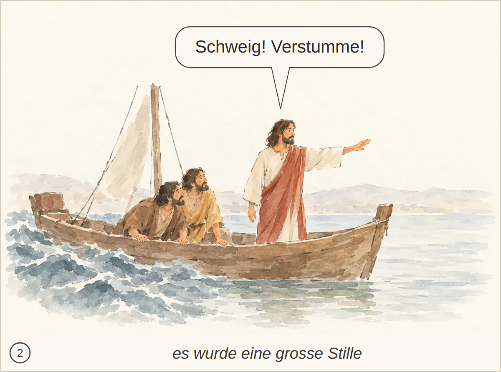
Kachel: bestanden, Kern 2 Nichts Wesentliches fehlt.
abgelegtes Bild: bestanden, 4 Punkte, Kern 1 Die innere Umkehr, der Entschluss zum Vater zurückzukehren und das Schuldbekenntnis fehlen; es wird eher als vor der Entscheidung beschrieben.
Blind: A ragged man sits on the ground beside several pigs. The pigs are eating from a trough while the man looks upward, appearing hungry, tired, or troubled. – This appears to illustrate the Bible parable of the Prodigal Son, at the moment when he is destitute and feeding pigs, before deciding to return to his father.
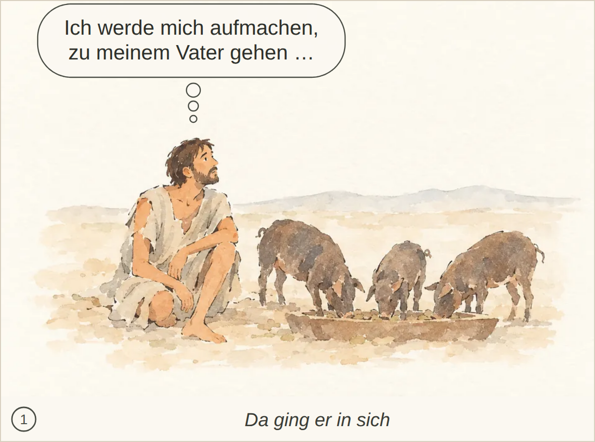
Kachel: bestanden, Kern 2 Nichts Wesentliches fehlt; der Moment wird klar erkannt.
abgelegtes Bild: bestanden, 6 Punkte, Kern 2 Kuss, ausdrückliches Bekenntnis des Sohnes sowie Auftrag zu Gewand, Ring, Sandalen und Mastkalb werden nicht klar erkannt.
Blind: An elderly man is embracing a younger man who is bowed forward and appears emotional or ashamed. A third figure stands in the background near a building, holding or carrying something. – This likely illustrates the Bible parable of the Prodigal Son, at the moment when the returning son is embraced by his father after coming home.
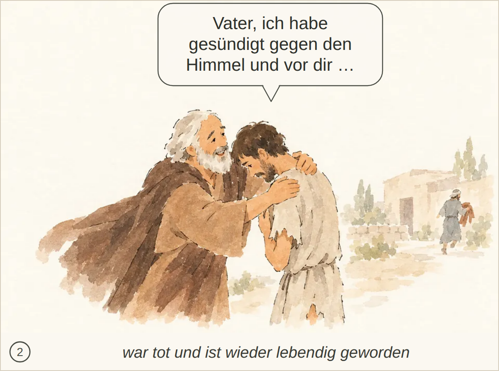
Kachel: bestanden, Kern 2 Erfasst den Kern gut; nicht erwähnt sind der Kuss, das Herbeibringen von Ring/Sandalen und das Schlachten des Mastkalbs.
abgelegtes Bild: bestanden, 5 Punkte, Kern 2 Keine wesentlichen Elemente; nur der genaue Wortlaut mit dem Zicklein und «tot/lebendig» wird nicht ausdrücklich dargestellt.
Blind: An elderly man is speaking to or pleading with a younger bearded man who stands with crossed arms and looks away. In the background, several small figures appear to be gathered near a doorway, possibly celebrating or moving together. – This likely illustrates the parable of the Prodigal Son, specifically the moment when the father pleads with the resentful older son to join the celebration for the younger son's return.
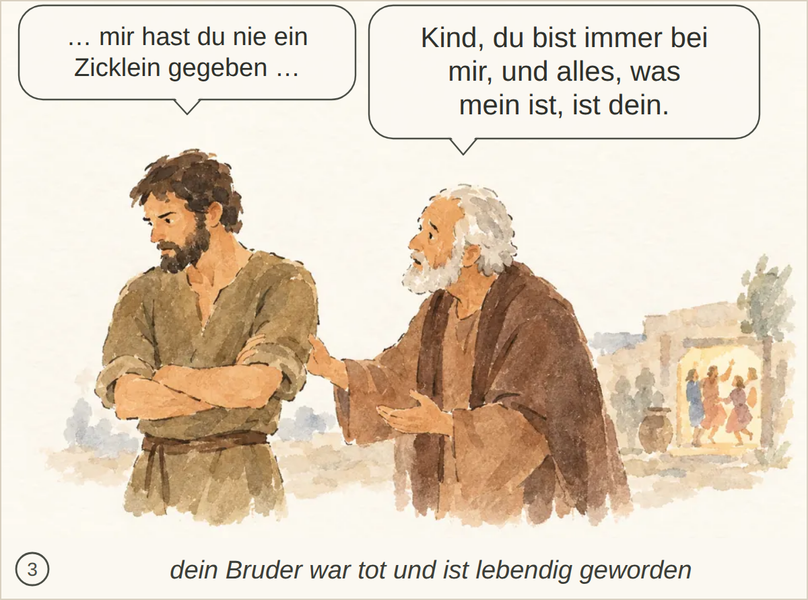
Kachel: bestanden, Kern 2 Nichts Wesentliches; die wörtlichen Aussagen über das Zicklein und den Bruder werden nicht ausdrücklich erwähnt.
abgelegtes Bild: bestanden, 4 Punkte, Kern 1 Teilweise passend: Jesus spricht zu Jüngern im Boot nach/bei ruhigem Wasser. Es fehlt aber die konkrete Zurechtweisung wegen ihrer Furcht und ihres fehlenden Glaubens sowie die ehrfürchtige Reaktion: dass Wind und See ihm gehorchen.
Blind: Four men are sitting in a wooden boat on calm water. The man in white on the right is gesturing as if speaking, while the three men on the left listen closely or react with concern. – This may illustrate a Gospel scene with Jesus and disciples in a boat, possibly Jesus teaching or speaking to his disciples on the Sea of Galilee. The exact moment is not certain from the visible details because there are no nets, fish, storm, or crowd shown.
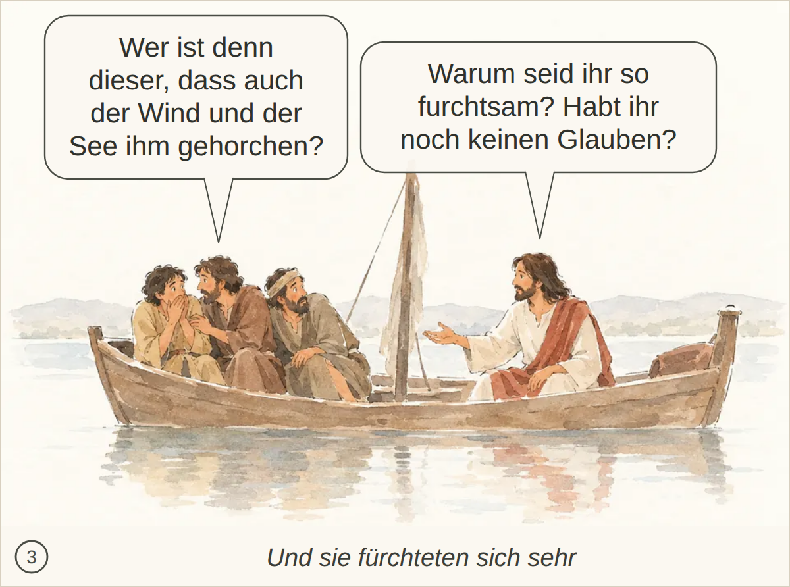
Kachel: bestanden, Kern 2 Nichts Wesentliches fehlt.